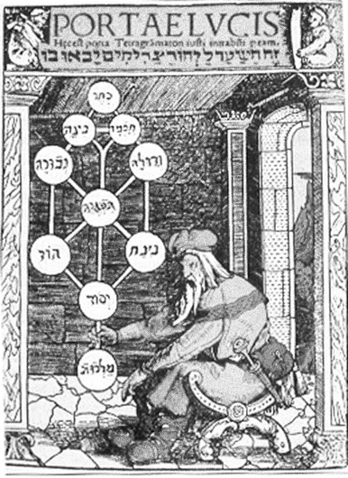
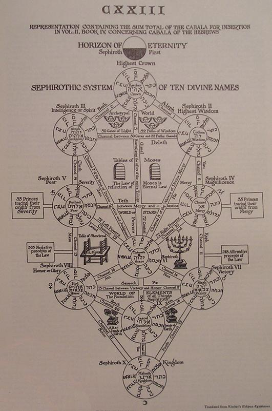

Regarding Positivism and Shadow Work
Analysis of Pymander and Majors
Interpretation of Inverted cards
The Numbering Sequence of the Majors
Duality: Oscillation – Lunar Cycle - Moon
Duality: Correspondence – As Above, So Below
Kings — NT Types (Fire, Hot and Dry)
Queens — NF Types (Air, Hot and Wet)
Knights — ST Types (Earth, Cold and Dry)
Pages — SF Types (Water, Cold and Wet)
Decomposition of MBTI into Hot/Cold and Wet/Dry
Mapping MBTI Temperaments to Tarot Ranks
Mapping MBTI Lifestyle and Energy Axes to Suits
Comparison with Traditional RWS Assignments
Appendix A – Permission to use the Steele Wizard Tarot Deck
Appendix B – Pymander 1650 Translation to English by Dr. Everard
Appendix C – Plato’s Chariot Allegory
Appendix D – Early Decan Descriptions
Eight of Wands – Sagittarius I
Nine of Wands – Sagittarius II
Ten of Wands – Sagittarius III
Seven of Swords – Aquarius III
Two of Pentacles – Capricorn I
Three of Pentacles – Capricorn II
Four of Pentacles – Capricorn III
Seven of Pentacles – Taurus III
Table 1 – Renaissance Timeline 18
Table 2 - Sephira 2,3 and 4 20
Table 3 - Attributions to Sephira 2,3 and 4 21
Table 4 – Early Pymander History 21
Table 5 - Renaissance Pymander History 22
Table 6 - Major Arcana that identify the Governors 27
Table 7 - Correspondence of Governors to Zodiac 28
Table 8 - Ascent Through the Seven Governors 30
Table 9 - The Majors Numbering sequence - Step 1 - recognition 33
Table 10 - The Majors Numbering sequence - Step 2 - ascent and descent 33
Table 11 - The Majors Numbering sequence - Step 3 – matching Wheel and world 34
Table 12 - The Majors Numbering sequence - Step 4 –swap Death and Temperance 34
Table 13 - Tarot Sequence aligned with Pymander 36
Table 14 - Functions of Cards within the Pymander 43
Table 15 - Court Cards as 4x4 index 108
Table 16 - The Four Elements as Suits 109
Table 17- Crowley’s Four Elements as Ranks 110
Table 18 - Element to Complexion Mapping 112
Table 19 - Rank to Age Mapping 112
Table 20 - Decomposition of elements to Hot/Cold and Wet/Dry axes 115
Table 21 - MBTI to Hot, Cold, Wet, Dry Mapping, NS, FT 117
Table 22 - MBTI to Rank Mapping 117
Table 23 - MBTI to Hot, Cold, Wet, Dry Mapping, PJ, EI 118
Table 24 - MBTI to Suit Mapping 118
Table 25 - MBTI Percentages of Population 119
Table 26 - DISC to Simple Element Mapping 120
Table 27 - Quotient to Simple Element Mapping 121
Figure 1 - Early attempts at Tree of Life 13
Figure 2 - Kircher's Tree of Life 13
Figure 3- Symbol for the Demiurge 49
Figure 4 - Aeon, Helios and Asclepios 50
Figure 5 - Isis behind a curtain, from Secret Teachings of All Ages – Manly P. Hall 52
Figure 8 - Marriage The Sixth key of Basil Valentine 60
Figure 9 - A portion of The Judgement of Solomon - Poussin 1649 Image courtesy Wikipedia Commons 65
Figure 10 - Anubis weighing of the heart against a feather 66
Figure 11 - Dame Nature and the Alchemist from Michael Maier's Atalanta Fugens 1617 68
Figure 13 - Eliphas Levi's Wheel of Fortune 72
Figure 14 - The Wheel of Fortune from Gregor Reisch, Margarite Philosophica (1503) 73
Figure 15 - Women riding Lions The Eleventh Key of Basil Valentine 76
Figure 16 - Emblem 16 from J.D. Mylius Philosophia Reformat, Frankfurt, 1622 77
Figure 17 - Alchemical image of Mother Nature as the White Virgin, with Lion 78
Figure 18 - Hanged Man as Sulphur 80
Figure 19 - Iris, Athenian red-figure lekythos C5th B.C., Rhode Island School of Design Museum 84
Figure 21- Alchemical image of Putrefaction 86
Figure 22 - Eliphas Levi's image of Baphomet 89
Figure 24 - Alchemical image of the Ladder of the Wise 94
Figure 25 - The Ladder of the Wise 95
Figure 26 - Photo by Salvador Dali, 100
Figure 28 - Alchemical Image of the World Engraving 1 107
Historians have firmly established the Tarot's physical origins in 15th and 16th century Renaissance Italy. They have, however, done little to clarify the meanings of the cards, particularly the Major Arcana. The Tarot has been linked to a game of Triumphs (Trumps), but no one knows why those 22 cards were chosen. Many mysteries surround their meaning.
Oral tradition claims that the major arcana hides a great secret (that is literally what the phrase “major arcana” means). It also names the Tarot as the Devil’s picture book, but the reason why has been lost. Certainly, he appears on one of the cards, but then, so does the Pope!
Any student of occultism, including Wicca, will tell you that every religion is built on a fundamental mythology - a story that serves as the foundation of the religion. For Christians, it is Christ's Resurrection. It is Leland's documentation of the Legend of Aradia that is important to Wiccans. It seems reasonable to assume that the Tarot Majors are based on mythology.
The challenge then becomes identifying the specific creation myth. It was most likely active in Renaissance Italy. The Major Arcana images would correspond to mythological elements. If it was dubbed the Devil's Picture-Book, we can assume that the papacy was not fond of it.
Surprisingly, these few hints point to a clear answer: Hermes' Divine Pymander, which is part of the Corpus Hermeticum and one of the key pillars of Hermeticism as studied by the Hermetic Order of the Golden Dawn.
To a large extent, the Renaissance was a cultural explosion centred on Florence and fuelled by the Medici family's vast fortune as Europe's preeminent financiers. Art and philosophy flourished as a result of their generosity and liberal beliefs.
In the mid-1400s, the Medici family solicited rare books with the intention of purchasing them for their collection. They were given the Pymander, among other things. In 1471, Ficino translated it into Latin, causing quite a stir in religious circles.
The Pymander claimed to be an old manuscript with many references to Genesis in the Bible. It was declared proper by fourteen Popes before being declared blasphemous by Pope Clementine. Giordano Bruno's burning at the stake, as related by Francis Yates in modern times, is noteworthy.
The basic theory of this paper is that the Pymander went underground in the visual form of the major arcana, later to be combined with regular playing cards to form the entire Tarot deck. In due course, we will present a condensed reading of the Pymander, tailored to the modern reader and centred on the Major Arcana cards that depict the text.
The Pymander emphasises that humans are born with a pure spirit that is beautiful and exquisite enough to make Angels jealous. But then we entered the mortal realm, absorbing the Governors' fundamental sins before being shrouded and clothed in clay to form our physical body.
This frame of mind leads to a preoccupation with sins, and thus negativity, which is not fashionable right now.
These sins are commonly referred to as the "seven deadly sins," but this is an incorrect translation into English. The "seven mortal sins" is a more accurate translation because they are sins that we cannot avoid once we enter the mortal state, here in the material world. They won't kill you, but you'll be at odds with them for the rest of your mortal life.
Another major advantage of the Pymander is that it describes how to remove these mortal sins, whereas most creation myths do not. It is encouraging because it is the ladder of the wise that will lead us out of materialism and back to our perfect inner nature.
Working with the Pymander is essentially Shadow Work, in which the practitioner tries to purge oneself of all sins. It's worth noting that the Hindu religion follows similar Hermetic concepts, with Krishna dealing with the same seven sins. Buddhism takes it a step further, considering all desire to be problematic and this world to be an illusion projected by God's intellect as a matrix-like "simulation." I'm curious what happens after Buddhism, once people realise that simulation is recursive and that God's intellect could be a simulation projected from a higher level?
Before delving into the Pymander, we'll look at and dismiss the popular belief that the major arcana are a representation of the Kabbalistic Tree of Life, based on the correspondence of twenty-two paths and twenty-two cards.
The following diagram depicts the state of development of the Tree of Life at the time. Simply put, the versions of the Tree from the time of the Tarot's origins (1516 in the image below) had only seventeen paths, whereas Kircher's twenty-two-path version was not published until 1650:

Figure 1 - Early attempts at Tree of Life

Figure 2 - Kircher's Tree of Life